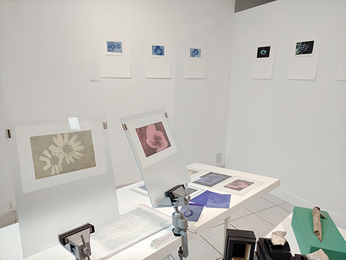

Vue des productions autour de l'édition l'Acte de la greffe, exposition sur table du LAAB en collectif augmenté, Galerie Hors[ ]Cadre, Auxerre, photo © Sabrina Issa, 2021.
L'acte de la greffe, exposition sur table
Exposition vente autour du tirage de l’édition L’Acte de la greffe, la transitivité, limitée à 300 exemplaires. L'édition est accompagnée d’une dizaine de multiples et d'une série de 8 cartes postales réalisées pour l’occasion.
Pièces uniques ou produits en série limitée nous avons, une pièce sonore et un instrument de musique éolienne dans sa pochette sérigraphiée de Samuel Aligand, des livrets imprimés sur papier thermique de Philippe Brière, des modèles réduits, portes-bonheur et bijoux sculptures de Lydie Regnier, des sculptures estampage à l'argile de Delphine Chevrot, plusieurs objets recevant les pièces sonores de Nicolas Bralet, des hydrolats de lichen, photogravures, Gauffrages et photographies UV de Sabrina Issa, des risographies de Nina Reumaux, des végétaux, porte-greffes de Anna Olszewska, ...
Cʼest à partir de ce projet réalisé en work in progress que nous rendrons visible à travers une édition, le travail réalisé au fils temps. Lʼédition sera ce supplément dʼespace pouvant transmettre et redéployer la diversité de lʼensemble des propositions, éphémères ou appelées à vivre sur le site.
Vue des productions (détail) autour de l'édition l'Acte de la greffe, exposition sur table du LAAB en collectif augmenté, Galerie Hors[ ]Cadre, Auxerre, photo © Sabrina Issa, 2021.
Vue des multiples de Lydie Regnier, productions autour de l'édition l'Acte de la greffe, exposition sur table du LAAB en collectif augmenté, Galerie Hors[ ]Cadre, Auxerre, photo © Sabrina Issa, 2021.
Sur l'image à gauche, Gemme, Bijou sculpture : bracelet matière plastique, pierre du Causse de Sauveterre, carton, pigment phosphorescent, papier peint. Au centre Modèle, Lichen, buis, pierre du Causse de Sauveterre, photographie, et au premier plan sur la droite, Longévités Porte-bonheur : porcelaine, lichen, papier d'emballage ensemencé, graines collectées, boite en carton.
Vue des multiples de Delphine Chevrot, Refuge végétal, estampage à l'argile, terre, végétaux et bois. Productions autour de l'édition l'Acte de la greffe, exposition sur table du LAAB en collectif augmenté, Galerie Hors[ ]Cadre, Auxerre, photo © Sabrina Issa, 2021.
Vue d'un des multiples de Nicolas Bralet, Elixir sonore, 2003/2021. Clé USB dorée avec logo gravée au laser, contenant 2 pièce sonores: Formule florale et Pluie Temporelle, bois de noyer, 1 exemplaire. Productions autour de l'édition l'Acte de la greffe, exposition sur table du LAAB en collectif augmenté, Galerie Hors[ ]Cadre, Auxerre, photo © Sabrina Issa, 2021.

Tirages en photogravure et photographies UV, Sabrina Issa, productions autour de l'édition l'Acte de la greffe, exposition sur table du LAAB en collectif augmenté, Galerie Hors[ ]Cadre, Auxerre, photo © Sabrina Issa, 2021.

Tirages en photogravure et photographies UV, Sabrina Issa, productions autour de l'édition l'Acte de la greffe, exposition sur table du LAAB en collectif augmenté, Galerie Hors[ ]Cadre, Auxerre, photo © Sabrina Issa, 2021.

Vue de l'installation, productions autour de l'édition l'Acte de la greffe, exposition sur table du LAAB en collectif augmenté, Galerie Hors[ ]Cadre, Auxerre, photo © Sabrina Issa, 2021.
Rhombe, de Samuel Aligand, Instrument de musique éolienne, PVC, métal et textile, 1 mètre, tiré en 7 exemplaires. Productions autour de l'édition l'Acte de la greffe, exposition sur table du LAAB en collectif augmenté, Galerie Hors[ ]Cadre, Auxerre, photo © Sabrina Issa, 2021.